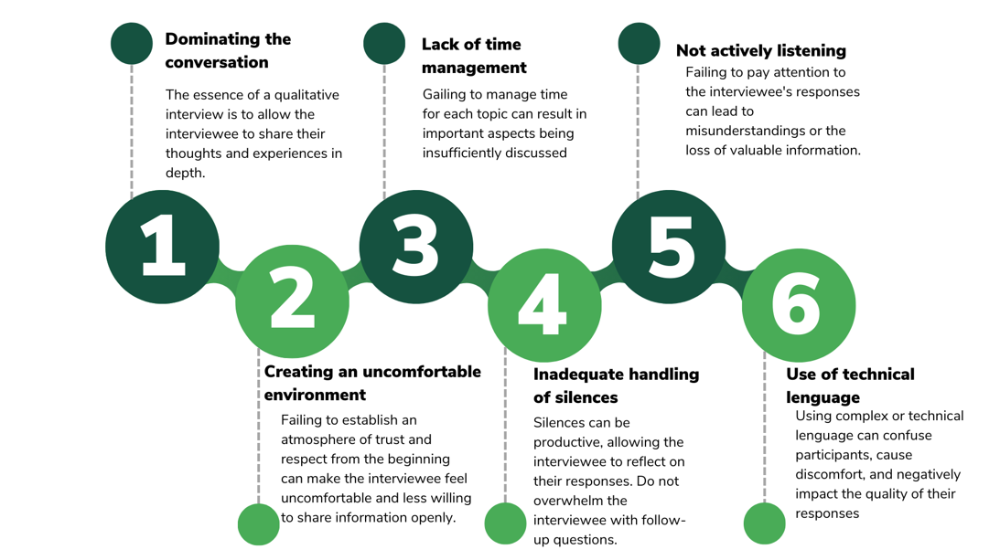

Qualitative Interviews
Practical guidance for researchers and practitioners on how to plan and conduct qualitative interviews, including team structuring, logistics planning, interview techniques, and managing common challenges.
- Qualitative interviews use structured dialog where an interviewer guides the conversation to gather in-depth information about feelings, opinions, and experiences from interviewees.
- The success of qualitative interviews depends on the interviewer’s skills in building rapport, active listening, and managing challenges.
What are qualitative interviews?
Interviews are a qualitative method of gathering information through a formal dialog between two people—the interviewer and the interviewee—guided by a specific research goal. Unlike conventional conversations, which involve symmetrical communication and relationship between the interlocutors1, a qualitative interview uses a structured approach. In this setting, the interviewee permits the interviewer to direct the conversation and guide the dialog in accordance with the objectives of the study. The interviewee thus becomes the primary source of information.2
This collection method offers flexibility. While there is a script or a list of specific topics to investigate, the interviewer may follow emerging topics or delve deeper into particular aspects according to the interviewee’s answers. The structure of this data collection technique can vary widely. At one end of the spectrum are highly structured interviews, which follow a defined sequence of topics and number of questions. At the other end are semi-structured interviews, where the moderator intuitively delves into the topics of interest.3 The research objectives and the type of data needed influence the structure of the interview.
Qualitative interviews seek in-depth answers and the person’s interpretive perspective. In general, interviews have some advantages for certain profiles in contrast to focus groups. These include experts in different fields, populations that experienced traumatic events, persons deprived of liberty, geographically dispersed populations, and people with disabilities. Moreover, the types of data gathered through interviews can include:
- Feelings and Emotions: Understanding the emotional responses and feelings of the interviewee.
- Opinions and Perspectives: Gaining insights into the interviewee’s viewpoints and beliefs.
- Experiences and Narratives: Collecting detailed accounts of the interviewee’s personal experiences.
- Knowledge and Expertise: Gathering information from experts or individuals with specialized knowledge.
In-depth interviews help to learn about the interviewees’ feelings, opinions, perspectives, beliefs, and experiences. The interviewees express themselves in their own words and in an active way, pointing out their point of view on the issues raised by the interviewer. This collection method works well for discussing complex or sensitive topics that some people may be reluctant to discuss in a group setting.4 Qualitative interviews provide unique insights from participants’ experiences and knowledge, translated into detailed narratives and descriptions that reveal how people interpret their experiences and the world around them.
Planning a qualitative interview
Proper preparation is essential for the success of an interview, ensuring that the research activity meets its field data collection objectives. This section provides detailed guidance on the planning steps that should be undertaken before conducting an interview.
- Structure your team
During qualitative interviews, the fieldwork team includes a moderator and a facilitator. The facilitator’s participation is crucial to support logistical and note-taking processes. While budget restrictions may sometimes require the moderator to work individually. If you have a facilitator, it is important that you identify the functions they will perform.
When an interview involves sensitive or personal issues, such as when the interviewee is hesitant to share intimate details, the interviewer’s approach can significantly impact the conversation. For example, if a facilitator does not value the importance of mental health, this may become evident in how they take notes during an interview about traumatic experiences related to mental health.
- Recognize the skills of the field team
The quality of data produced during qualitative research activities relates to the skills of the moderator and facilitator.5 These competencies, outlined in Table 1, enable teams to recognize and adequately represent the diversity within qualitative data.6 While these skills are typically developed through years of study and practice, field teams often consist of individuals from multidisciplinary backgrounds. These individuals have varying levels of experience. Regardless of experience level, it is important to review and discuss these skills with your team to identify possible gaps and opportunities for improvement.
Currently, there are no standardized metrics to measure the prevalence of these skills among qualitative fieldwork moderators. Therefore, teams should view the skills in Table 1 as a resource for reference and reflection. Ensuring that everyone on the team understands how these competencies contribute to engaging with the population is essential for collecting high-quality information.
| Skill | Description | Why is this skill relevant? |
|---|---|---|
| Cognitive empathy | The field team’s ability to understand and communicate participants’ situations from their perspectives, understanding how they see the world and their roles within it. | Allows researchers to connect with participant’s realities and experiences. Helps to create a relationship of trust and respect with the participants. Seeks to avoid generalizations and stereotypes that may arise from preconceptions or external influences such as previous studies. Enhances understanding of participants’ situations without resorting to pity. |
| Follow-up | The field team’s ability to recognize when additional information is needed to answer the questions initially posed and those that arise during the research process. This ability implies curiosity and a willingness to explore new issues or doubts that emerge as data collection progresses. | Increases the quality and robustness of data by allowing a more detailed exploration of the studied phenomenon. Contributes to obtaining deeper responses from participants. Enables exploration of emerging themes during data collection. Helps detect and validate patterns observed in the field. |
| Self-awareness and reflexivity | The field team’s ability to continuously reflect on how their presence, background, and assumptions influence data collection, interpretation, and analysis. This ongoing self-reflection ensures that the qualitative field team is mindful of its impact on the research process and the participants. | Helps maintain ethics in the researcher-participant relationship. Facilitates understanding of personal limitations in connecting with participants. Aids in developing strategies to overcome communication barriers and create an environment where participants feel comfortable sharing sensitive information. |
| Heterogeneity* | The field team’s ability to represent and reflect the diversity within the group being studied. This skill involves recognizing and documenting the differences and variations among individuals or subgroups during qualitative research, typically applied during the data analysis phase. | Contributes to challenging generalized and simplistic patterns. Ensures that data reflect both common and atypical experiences. Demonstrates the field team’s ability to identify, recognize, and document heterogeneity in the population studied. |
| Palpability | The field team’s ability to provide detailed descriptions in their field notes or diaries, making the data tangible and clear. This involves avoiding abstract descriptions and, instead, offering vivid accounts that allow the research team to visualize and understand participants’ experiences and contexts. | Reliable findings are supported by specific details that depict the events and situations studied. Helps to avoid abstraction in the data, grounding conclusions in concrete evidence. |
- Plan logistics activities
Logistical activities play a crucial role in the success of interviews. Careful planning ensures that all necessary elements are in place to conduct interviews effectively. The following list presents general activities that should happen before implementing interviews. However, this list could be more comprehensive based on the specific research needs of the fieldwork. Ensure you cover all critical aspects to complete your research activities successfully. Based on experience in qualitative field operations across various contexts, the IPA team has identified key practices that guide research teams in effective planning:
Schedule interviews at least one week in advance. Send reminders before the activity.
During scheduling, tell participants about the objective, scope, leading organization, and confidentiality of the interview to align expectations and avoid confusion.
Verify the location and conditions of the meeting site. Remember that it is important to schedule a place whose location does not pose a risk to the participant or the team.
This place should have appropriate seating and furniture so the participant feels comfortable during the interview.
Ensure you have all the necessary materials for the session. This includes incentives, refreshments/snacks, attendance sheet, recording equipment, and batteries.
Test the audio equipment in advance to ensure clear recording of the interview.
Have a note-taking strategy to identify topics not recorded in the audio, capture nonverbal communication from the participant, and document the session in case the participant does not consent to recording. The facilitator supports this task.
- Design and study the script
Understanding the research questions is crucial for effective interviewing. The script is a guiding tool that helps keep the conversation within the research objectives. However, each dialog is unique, so it’s important to study the script to adapt to the conversation’s context without losing sight of the main topics.
During the script preparation, you should identify the main questions to address the research objectives and strategically use follow-up and probing questions to delve deeper into relevant issues7:
Main questions: These are the questions that guide the interview. They are defined beforehand and specified in the script.
Follow-up questions: These are used to obtain more details and depth on specific topics, concepts, or events mentioned by the person being interviewed
- What do you think would happen if [situation]?
- Could you give an example of [topic]?
- How did you decide to do it that way?
- How did you determine what was important?
- How did you conclude what you are telling me?
Probing questions: They help validate what the participant is saying and also encourage the dynamic flow throughout the conversation.
- Is this what you said [statement]?
- Did I understand you when you said [statement]?
- What is another way you could [action]?
- Did I paraphrase accurately what you said?
This will allow you to obtain the essential information directly related to the study’s objectives. It also allows you to explore additional areas that can provide context and enrich the understanding of the data. It is also important to understand the research goals and main questions. It will allow you to go beyond the questionnaire and approach questions or dimensions of the problem that were not initially known.
Conducting a qualitative interview
To begin the interview, always start by introducing yourself and the objective of the session. Read the informed consent form. Ensure that the interviewee understands the purpose of the activity, its confidentiality, and the potential risks and benefits of participating in it. Use simple words that the interviewee understands.
Then, emphasize the data security measures your team is taking to keep the information confidential. This will help the interviewee feel confident that they can discuss their experiences and will be heard.
Create a comfortable and calm atmosphere. Throughout the activity, it is essential to maintain this atmosphere that allows the interviewee’s opinions to be spontaneous.
- Ensure that recording equipment is working throughout the activity.
- Ask counter-questions to the interviewee.
- Verify that no relevant topics are left out.
- Assist if the interviewee’s emotions prevent them from continuing with the interview. For example, in actions such as offering a glass of water or proposing a pause.
- Take notes of the entire activity, especially the interviewee’s nonverbal reactions.
- Support the moderator in time management.
Being an effective interviewer?
The interviewer guides the discussion and ensures the flow of the dialog with the interviewee while focusing on the relevant issues. An effective interviewer not only facilitates a natural discussion, but also creates an environment where the participant feels comfortable and safe expressing their opinions openly, without fear of criticism or judgment. Table 2 presents skills of effective qualitative interviewers.
| Skill | Description | Why is this skill relevant? |
|---|---|---|
| Provide for participants’ well-being | Create safe and comfortable environment. Prioritize interviewee’s well-being, respect and value. Adapt environment and rhythm to reduce stress/discomfort. | Helps establish trust and encourages open dialog. Shows respect for participant’s comfort and dignity. Body language that promotes trust is essential. |
| Be empathetic | Express empathy and validate interviewee’s emotions to create atmosphere of openness and sincerity. Practice effective communication. | Creates atmosphere of trust. Helps interview flow well. Express gratitude for participation. Match facial expressions and tone to emotions shared. |
| Use few interruptions | Avoid abrupt interruptions. Guide conversation back on track subtly when needed. Let interviewee establish narrative order. | Respects participant as main source of information. Allows natural flow of conversation while maintaining focus. Can use techniques like paraphrasing to redirect gently. |
| Listen actively8 | Show full attention and interest. Consider both verbal and nonverbal communication. Ask thoughtful follow-up questions. | Demonstrates respect and engagement. Helps ensure accurate understanding. Allows deeper exploration of topics through appropriate follow-up. |
| Avoid value judgments | Maintain neutral, inquiring stance. Don’t express agreement/disagreement that could influence responses. | Prevents biasing responses. Keeps focus on participant’s perspective. Use neutral phrases to encourage elaboration. |
| Train your memory | Develop ability to remember key details for meaningful connections during conversation. | Enables better follow-up questions. Helps maintain conversation flow. Allows tracking of important themes. |
| Use silences constructively | Handle silences constructively to allow reflection time. Avoid filling silence with filler words. | Gives participants time to think. Shows respect for responses. Allows natural pace of conversation. |
Potential challenges in a qualitative interview
There are situations that could take place during a qualitative interview that you should prepare for. Here are some examples:
In some interviews, particularly at the beginning, the interviewee may be shy or inhibited, which prevents them from providing detailed and in-depth answers to the questions posed. To identify an incomplete or superficial response, you can look for aspects such as:
- answers that are too general and do not provide specific details
- answers that are limited to one or a few words
- haste in answering without going into detail.
Invest time at the beginning of the activity to build rapport with the interviewee before addressing more in-depth questions. This initial trust may encourage fuller responses. You can use “icebreaker†activities to do this. Ask open-ended questions that require a more elaborate response and prepare follow-up questions to provide more details on initial responses. Ask for clarification by using counter-questions like “How did you feel about this?†or “What was your reaction when this happened?†to encourage more detailed answers. Explain how your answers make a valuable contribution to the study or project. Ask easy-to-understand questions in simple language and rephrase some if necessary.
Participants may experience intense emotions during an interview, which can be challenging to manage due to the personal nature of discussions. Be empathetic and avoid abrupt changes in discussion topics during emotionally charged moments. Allow participants to express their emotions while guiding the discussion constructively. Offer the option to pause or continue based on the participant’s comfort. If emotions are overwhelming, take a short break and show support. Provide relevant mental health care information per research protocols. Ensure the field team has training in psychological first aid if sensitive issues will be discussed.
Fatigue can affect both the interviewee and interviewer, leading to a loss of concentration, energy, and quality in responses. This may result in missed questions or premature assumptions. Limit the interview length and be flexible with scheduling if you notice signs of fatigue. Ensure the interview environment is comfortable, with good lighting and low noise. Schedule breaks during the interview if necessary, or continue at another time if needed. Consider active breaks or refreshments to help rejuvenate participants.
Conversations may deviate from the interview’s objectives, requiring the moderator to tactfully redirect the discussion while balancing the exploration of valuable but off-topic insights. Direct the conversation subtly and without abruptly interrupting the interviewee to return to the main topic. Establish clear objectives at the beginning. Before starting the interview, explain the objectives and topics to be covered so that the interviewee is clear about the necessary focus.
An interviewee may dominate the conversation with aggressive or derogatory language, creating a tense atmosphere. Prepare some key concepts about the topic that can help you respond confidently to the interviewee’s objections or challenges. In the event of verbal or other kind of aggression, end the interview, thanking the participant for their time.
Common interview mistakes
When conducting qualitative interviews, avoid some mistakes so that the research activity, objectives, and the integrity of the person being interviewed are protected. Some mistakes are described here:

After the interview
The interview concludes when the interviewer determines that all the topics outlined in the script have been covered or if the interviewee indicates that the session should end due to time constraints or emotional reasons. To wrap up the working session, it is recommended to:
- Provide space for reflection in which the interviewee can express comments, suggestions, or questions about the discussion
- Express gratitude to the participants for their time and willingness to participate, emphasizing the importance of their opinions and the information they provided to the study
- Secure the data by prioritizing the safe storage of the recording and notes from the session.
It is also important to start working on the interview notes as soon as possible once it has been completed because if too much time passes between field activities and developing analysis, there is a risk of accumulating information and losing the opportunity to enrich the study research team insights.
Document Research Activities
At the end of the interview, it is important to document the information obtained in detail. How this documentation is done is a decision linked to the research design and researchers determine this before fieldwork begins. Examples of products you can use for this purpose are:
- Full transcripts of the discussions
- Detailed notes taken during the research activity
- Field notes
- Field diaries
The lack of initial documentation products risks all information processing components and, thus, the quality of the data obtained.
Information should be recorded as soon as the interview concludes, to prevent the loss of crucial details. This immediate action is vital to the research process. In addition, the products derived from the focus group must follow information storage protocols, which may include anonymization and encryption to avoid compromising the confidentiality of participants.
Online interviews
Remote interviews through a digital platform such as meets, Zoom, or telephone are an alternative when face-to-face interviews are not feasible due to distance, time, and budget constraints or when the interviewee prefers a remote setting. These interviews are beneficial for connecting participants from distant geographic locations or those who cannot attend in person, while also providing a safe and discrete environment. However, remote settings come with specific challenges that must be considered.
| Challenges | Description | Possible solutions |
|---|---|---|
| Building trust and empathy | In remote interviews it is often more difficult to establish trust. | Invest time in the initial conversation to establish a personal connection. Be expressive and attentive to compensate for the lack of more subtle nonverbal cues. Avoid distractions that may be present. In the case of virtual interviews, ask the participant to use a camera during the activity. |
| Connectivity problems | Connectivity problems include situations that may cause people to interrupt their participation in the interview. | During the scheduling, validate the participants’ connection difficulties; if they require it, make internet recharges. Avoid that the research activity generates connectivity costs for the participants. If necessary, consider interviewing in person. |
| Fatigue due to constant use of screens | Fatigue associated with prolonged screen use or time on the phone can affect the concentration of both the interviewer and the interviewee. | Plan breaks during lengthy interviews. Limit the duration of each session to a reasonable time, approximately one hour. Plan several sessions if necessary. |
| Users multitasking | The person being interviewed may perform other tasks while participating. This may affect their participation in the activity. | Suggest that the interviewee have their camera turned on. During scheduling, remember that the interview is an activity that involves full attention to listening to others, and engagement with the questions. |
| Confidentiality | Some interviewees may carry out the activity in spaces shared with family members and acquaintances. Depending on the sensitivity of the topics, this situation may place participants in uncomfortable or risky situations. | Advise interviewees on how to select an ideal space to have the interview. Inform the participant when the recording starts, pauses or stops. |
A Practical Guide for Conducting Interviews
The content in this resource adapts from IPA Colombia’s “Practical Guide for Conducting Qualitative Interviews”. This practical guide provides some tools to conduct qualitative fieldwork through interviews. However, it is essential to note that data collection is one of the first steps in the process. After data collection, a necessary process of analyzing the information collected follows. This analysis allows the results to be interpreted and understood in depth, facilitating the identification of patterns, themes, and meanings crucial for qualitative research.
Footnotes
Ruiz, A. (n.d.). Entrevista cualitativa: la conversación como forma de acceso al conocimiento [Paper presentation]. II Jornada de Investigación en Disciplines ArtÃsticas y Proyectuales. http://sedici.unlp.edu.ar/handle/10915/39236↩︎
López, R., & Deslauriers, J. P. (2011). The qualitative interview as a means of research in Social Work. Márgen, (61).↩︎
Ryan, F., Coughlan, M., & Cronin, P. (2009). Interviewing in qualitative research: The one-to-one interview. International Journal of Therapy and Rehabilitation, 16. https://doi.org/10.12968/ijtr.2009.16.6.42433↩︎
Mack, N., Woodsong, C., MacQueen, K. M., Guest, G., & Namey, E. (2005). Module 3 In-Depth Interviews. In Qualitative Research Methods: A Data Collector’s Field Guide (pp. 29-50).↩︎
Small, M. L., & Calarco, J. (2022). Qualitative Literacy: A guide to evaluating ethnography and interview research. University of California Press.↩︎
Small, M. L., & Calarco, J. (2022). Qualitative Literacy: A guide to evaluating ethnography and interview research. University of California Press.↩︎
Rubin, H. J., & Rubin, I. S. (2012). Structure of the responsive interview. In Qualitative Interviewing: The Art of Hearing Data (3rd ed., pp. 115-129). SAGE Publications.↩︎
Kvale, S. (2007). Conducting an interview. In Doing Interviews (pp. 52-66). SAGE Publications.↩︎